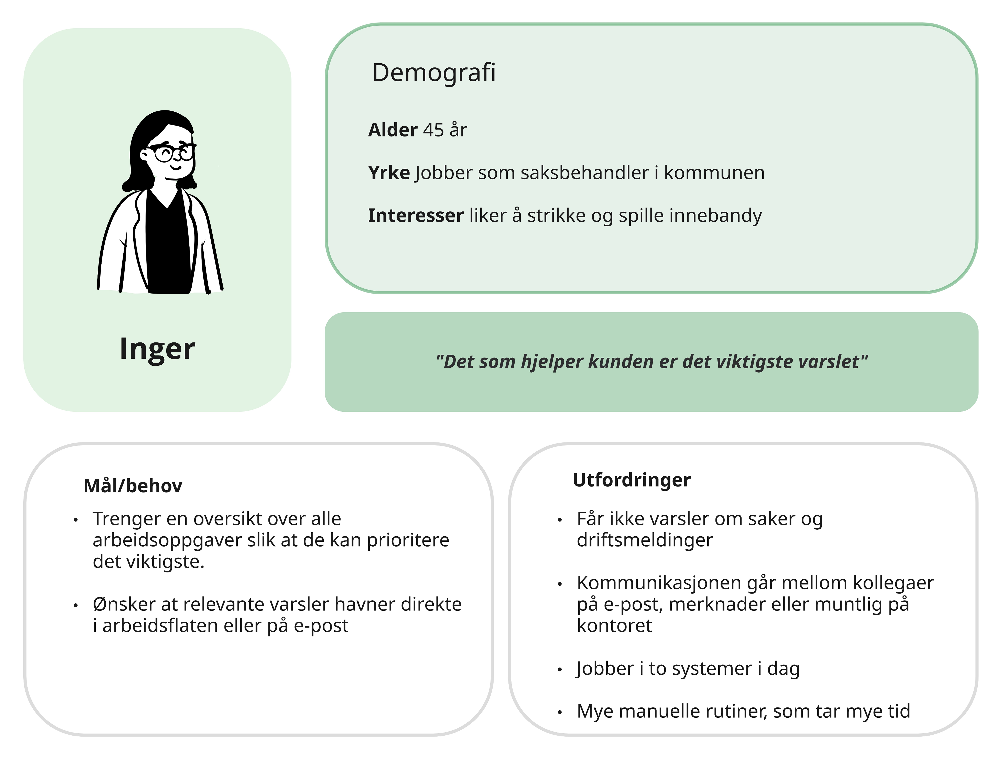
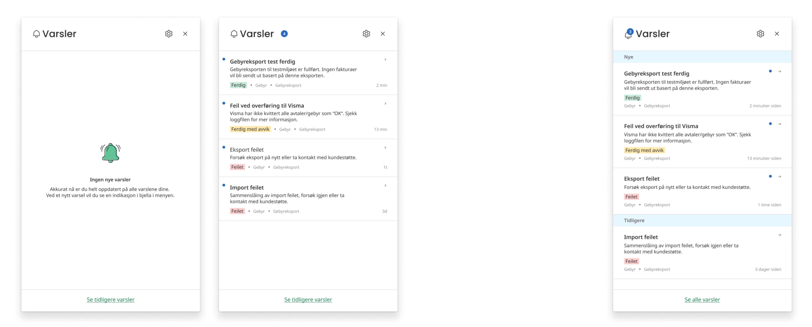

Designprosessen
Prosjektet ble drevet frem gjennom smidig utvikling, hvor jeg hadde hovedansvaret for design og brukeropplevelse gjennom prosjektet. Prosessen startet med å samle innsikt gjennom workshops, intervjuer og møter med produkteiere og designere. Jeg kartla brukernes behov og identifiserte utfordringene i den eksisterende løsningen, og gjorde brukertesting og A/B-testing for å hjelpe meg å validere og forbedre løsningene underveis. Slik ser Norkarts metodikk ut for design og produktutvikling:

Designet inkluderte et sentralt varslingssenter som samlet alle varsler på ett sted, med fokus på tydelighet, universell utforming og enkel navigasjon. Vi tok i bruk visuelle hierarkier, fargebruk og interaktive elementer for å sikre rask forståelse og effektiv bruk.
Utforske
I prosjektet brukte jeg både Miro og Figma som verktøy. Miro benyttet vi til samarbeid, planlegging og å samle innsikt. Figma brukte jeg til design og prototyping. Norkart har et solid designsystem (Tōitsu), slik at mange løsninger kunne settes sammen ved å tilpasse eksisterende elementer. I begynnelsen måtte jeg gjøre meg kjent med designsystemet, og jeg endte opp med å lage egne komponenter som allerede eksisterte fordi jeg ikke hadde full oversikt. Dette ga meg likevel verdifull læring og erfaring i å lage egne komponenter fra bunnen.
Persona
Gjennom intervjuer med saksbehandlere som Inger, kartla vi en travel hverdag fylt med manuelle rutiner. Inger jobber i dag i to ulike systemer og mottar viktige varsler spredt over e-post, muntlige beskjeder og interne notater. Hennes største utfordring er å miste oversikt over kritiske saker og driftsmeldinger, noe som går utover kunden.

Mulighetstreet
En metode jeg spesielt vil trekke frem, er mulighetstreet. Dette var en tilnærming jeg lærte i prosjektet, og som passet meg godt fordi jeg er en visuell person. Å kunne se en oversikt over ulike løsninger, smertepunkter og behov gjorde det enklere å vurdere hvilke tiltak som hadde størst nytte. Samtidig ga det en god mulighet til å kombinere flere ideer for å skape et enda bedre produkt:

Levere
AB-testing
Vi ønsket å teste hvordan saksbehandlerne ønsket å håndtere varslene sine. Vi satte derfor opp en AB-test mellom to ulike konsepter:
- Versjon A: Her fungerer varslingssenteret som en dynamisk 'to-do'-liste. Når et varsel er håndtert, forsvinner det fra listen for å holde arbeidsflaten ren.
- Versjon B: Her blir alle varsler liggende, men de deles inn i 'Nye' og 'Tidligere'.

Selv om prosjektet foregikk midt i fellesferien, valgte vi å gjennomføre testing med de som var tilgjengelige på kontoret. Resultatene viste at 88 % foretrakk arbeidslisten. Tilbakemeldingene bekreftet at det å se listen tømmes etter hvert som oppgavene ble gjort ga en mestringsfølelse, samtidig som det ble mye tydeligere hvilke varsler de faktisk ikke hadde rukket å se på ennå.
Håndtering av utfordring
En av de største utfordringene dukket opp da vi skulle koble opp for e-postvarslinger. Designet var allerede klart for implementering da vi møtte uforutsette restriksjoner i backenden kombinert med personvernhensyn. Vi fikk rett og slett ikke tilgang til de dataene vi trengte i løpet av prosjektperioden.
Dette lærte meg hvor viktig det er med tidlig avklaring rundt tekniske begrensninger, og at et godt design må være fleksibelt nok til å tåle endringer i rammene vi hadde å jobbe innenfor.
Løsningen
Løsningen vår er en bjelle i menyen som åpner et responsivt popup-vindu med varsler som er relevante for deg. Når du klikker på et varsel, blir du sendt videre til den tilhørende siden, og varselet fjernes automatisk fra popupen. Brukerne mottar kun varsler knyttet til de arbeidsområdene de jobber innen, og slipper dermed meldinger som ikke er relevante for dem.


Det er også mulig å se en full oversikt over alle varsler, samt markere varsler som ulest. Da vises de på nytt i popupen. På denne måten kan brukerne behandle varslene som en slags arbeidsliste.

I tillegg kan brukerne tilpasse hvilke typer varsler de ønsker å motta og hvordan de mottar dem. Enkelte varsler er påkrevd, for eksempel systemfeil.

Hva har jeg lært fra dette prosjektet
Gjennom dette prosjektet har jeg fått mye verdifull erfaring som designer. Noen av de viktigste lærdommene er:
- Betydningen av brukersentrert design og kontinuerlig testing.
- Å balansere estetikk og funksjonalitet i praksis.
- Viktigheten av samarbeid i et tverrfaglig team.
- Å designe inkluderende løsninger med fokus på universell utforming.
- Lage ikoner vi manglet i Figma
Jeg hadde prøvd å vurdert universell utforming gjennom hele prosjektet, men lærte viktigheten av å tenke på hvordan interaksjoner fungerer på ulike skjermtyper først mot slutten.
Jeg fikk også erfaring med å tenke på små, men viktige scenarioer, som hva slags tekst som skal vises når en bruker ikke har noen filtreringer. Her fikk jeg god hjelp fra frontend-utvikleren, som gjennom sitt arbeid med koden stilte spørsmål og satte rammer jeg ikke hadde tenkt på selv. Hun kom med gode innspill rundt filtreringsløsningen, og gjennom samarbeid fant vi en løsning som ble bedre enn den jeg opprinnelig hadde sett for meg.
Alt i alt har jeg lært utrolig mye i dette prosjektet, både om designprosessen, samarbeid og hvordan man løser konkrete utfordringer i praksis. Jeg fikk masse erfaring som jeg kan ta med meg videre, og det var svært givende å jobbe i et tverrfaglig team. Ved å sitte sammen, snakke ofte, sparre og teste ideer kontinuerlig, kunne vi utvikle bedre løsninger raskt. Prosjektet har gitt meg en dypere forståelse av hvordan teori fra studiene kan overføres til praksis.